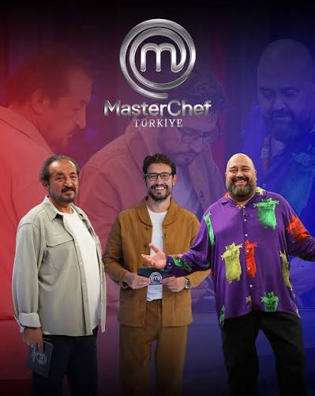
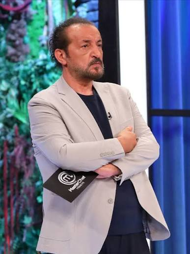
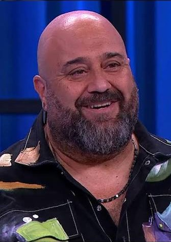

Aradığın şey bulunamadı — yazımı kontrol edip tekrar dene.
Bu Hafta
En yeni önce.
Oyuncular 👥
Form — 15. hafta
Kayıtlara göre puan — 10–11 Kasım düello puanları kayıtlarda eksik.
12 yarışmacı · başarı puanına göre sıralı — karta tıkla, profil açılsın.
Takım İstatistikleri 📊
Eleme Gecesi Puanları ⭐
Eleme gecelerinde şeflerin her yarışmacıya verdiği puanlar — tur tur, ürün ürün. Toplamlar aritmetikle doğrulanır. (22 Kasım gecesinde şef başına dağılım web kaynaklarında yok; yalnızca tur toplamları var.)
Reklamınız Burada Olabilir
Bu alan sponsorluk için ayrıldı. Siteniz burada görünsün istiyorsanız bize ulaşın.
Keşfet
👥 Yarışmacılar
Tüm profiller — yemekler, galibiyetler, pota geçmişi.
Keşfet →📅 Bölümler
Gün gün bölümler — en son önce.
Keşfet →🔵🔴 Takımlar
Hafta hafta kadrolar + en iyi ikililer.
Keşfet →💬 Tartışmalar & Gündem
Tartışmalar ve gündemler — tarafsız özetler.
Keşfet →🗳️ Konsey Oyları
Konseyler — toplamlar ve söylenen oylar.
Keşfet →📊 İstatistikler
Sıralamalar ve sezon rekorları.
Keşfet →📂 Kaynaklar & Uyarılar
Dosyalar nasıl birleştirildi, ham veriler.
Keşfet →Jüri 👨🍳



Fotoğraflar: MindYourAI (MasterChef Türkiye / TV8).
Eleme Gecesi Yorumu — 22 Kasım 🍽️
Şükran 1 puanla elendi. Bir puan. Tolgahan 35, Şükran 34. O 1 puan nerede kayboldu dersen: ikinci turda. "Ben Saksı Değilim" tabağına üç şef de 4–4,5 verdi — üçü de aynı fikirdeydi, tabak olmamış. Ama asıl hikâye birinci turda: yer elmasında Mehmet 6 verdi, Danilo 7,5, Somer 7,5. Aynı tabak, aynı gece, 1,5 puan fark.
Peki bu fark nereden geliyor? Rakamlara bak: iki eleme gecesinde Mehmet 16 tabaktan 15'inde en düşük puanı veren şef oldu. Danilo ise en cömert — ortalaması 6,53, Mehmet'in 5,66. Armağan'ın yer elmasına Danilo 8 verdi, Mehmet 6,5. Yani aynı tabağa biri "neredeyse kusursuz" derken öbürü "eh işte" diyor. Şeflerin damak zevki mi farklı, yoksa biri diğerinden daha mı katı?
Bir de şu var: Mehmet, Şükran'a herhangi bir tabakta 1 puan fazla verseydi, Şükran Tolgahan'la 35–35 berabere kalacaktı. O zaman ne olurdu, bilinmez — ama 1 puanın bir yarışmacıyı evine gönderdiği gece, şeflerin puanları arasındaki 1,5 puanlık farklar biraz daha dikkat çekici oluyor, değil mi?
Yorum sizde. Puanların tamamı, grafikler ve Şef Karnesi bu sayfada — yeni bölümde görüşmek üzere. Bizi Instagram'da da takip edin: @mymastercheffanpage
Bu yorum sayfanın kendi görüşüdür; puanlar ve ortalamalar eleme gecesi kayıtlarından hesaplanmıştır.
Bize Ulaşın ✉️
Düzeltme veya önerin mi var? Yaz bize — mesajın mindsyourai@gmail.com adresine gider.